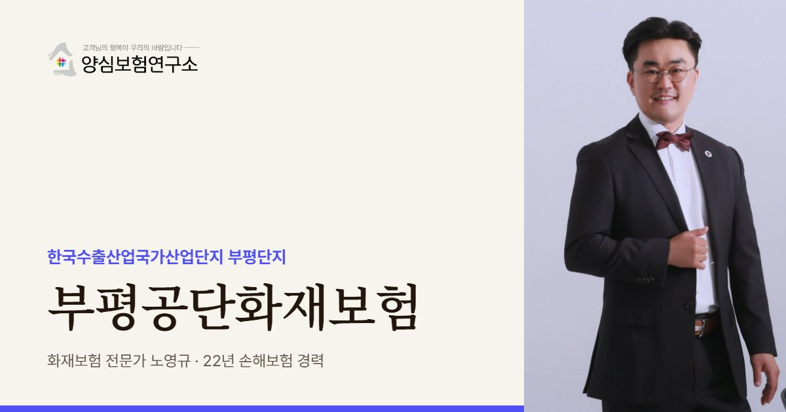

부평공단화재보험은 인천 청천동 수출산업 부평단지 입주 공장의 화재 손해와 이웃 배상책임에 대비하는 보험입니다. 1965년 지정된 1세대 단지라 건물 가입금액을 재조달가액 기준으로 다시 따져 봅니다. 임차 비율이 약 37%로 낮아 건물까지 직접 챙기는 사업주가 많습니다.
부평공단화재보험 보장 항목
- 자가 공장 건물: 청천동의 오래된 자가 공장 건물과 증축분 (임차 비율 약 37%로 소유 공장 많음)
- 전기전자 설비: 전기전자 업종이 가장 많은 부평단지의 전자 공정 설비 (연기·그을음·소화수 피해)
- 이웃 호실 배상: 창고·유통·서비스 업체가 섞인 부평 공장 건물의 이웃 호실 피해
- 제3자 배상: 도심 주거지와 가까운 부평 공장의 연기 피해 등 제3자 손해
부평공단화재보험 보험료 산정 기준과 가입 시 고려사항
- 재조달가액: 1960년대 단지 건물의 장부 가치가 아닌 지금 다시 짓는 비용
- 등기·증축 이력: 여러 차례 증축·용도변경된 건물의 서류상 구조와 실제 구조 일치
- 정비사업 공사: 청천동·십정동 정비와 노후거점산단 경쟁력강화사업 기간의 주변 화기 작업
- 재임대 계약: 공장 한 동을 재임대할 때 임차 업체의 설비·재고 보험 준비 의무 명시

부평공단은 오래된 공장 건물 안에 전자·기계 업체가 촘촘히 자리한 도심형 산단입니다. 노영규 대표가 건물의 역사와 지금의 쓰임새를 함께 보고 보장을 맞춥니다.
부평공단 안내
부평공단, 왜 공장화재보험이 중요할까요?
부평공단화재보험은 인천 부평구 청천동의 한국수출산업국가산업단지 부평단지에 입주한 공장이 화재로 입는 손해와 이웃에 대한 배상책임을 대비하는 보험으로, 산단의 특성을 반영해 설계합니다. 부평공단은 1965년에 지정된 수출산업 1세대 단지로, 이번에 살펴본 산단 가운데 지정 시기가 가장 이릅니다.
2026년 6월 기준 1,902개사가 입주해 있고 업종은 전기전자(32.0%)가 가장 많습니다. 비제조업(21.9%)과 기계(21.7%)가 비슷한 비중을 보이는데, 제조 공장 사이에 창고, 유통, 서비스 업체가 섞여 있다는 뜻입니다. 한 건물 안에서도 쓰임새가 제각각이라 이웃 호실의 업종을 알아 두는 것이 위험을 가늠하는 첫걸음입니다.
임차 비율은 약 37%로 반월·시화·남동보다 낮은 편입니다. 자기 소유 공장이 상대적으로 많아 건물 보험을 직접 챙겨야 하는 사업주가 많다는 뜻이기도 합니다. 오래된 건물은 처음 지을 때의 가치와 지금 다시 짓는 비용의 차이가 커서, 건물 가입금액을 재조달가액 기준으로 다시 따져 볼 필요가 있습니다.
부평공단은 노후산단 목록에 포함돼 있고, 2020년 청천동·십정동 일대가 노후 산업단지 정비가 필요한 지역으로 지정됐습니다. 이어 주안단지와 함께 노후거점산업단지 경쟁력강화사업(2024~2026년)이 진행 중입니다. 정비와 공사가 이어지는 시기에는 인근 공사 현장의 화기 작업도 위험 요인이 될 수 있습니다.
부평공단 공장을 상담할 때는 건물 등기와 증축 이력을 먼저 봅니다. 1960년대에 지정된 단지의 건물은 여러 차례 증축과 용도변경을 거친 경우가 많아 서류상 구조와 실제 구조가 다를 수 있습니다. 증권에 적힌 건물 구조와 면적이 실제와 맞아야 사고 뒤 보상 과정에서 불필요한 다툼을 피할 수 있습니다.
주요 위험
부평공단 공장 화재보험에서 먼저 볼 위험은 무엇인가요?
노후 건물의 재조달 비용
오래 전 지은 건물은 장부 가치와 다시 짓는 비용의 차이가 커 가입금액을 새로 맞춰야 합니다.
전기전자 설비
전자 공정은 작은 발화에도 연기와 그을음으로 설비 전체가 멈출 수 있어 설비 손해를 넓게 봅니다.
섞여 있는 업종
창고·유통·서비스 업체가 섞인 건물은 이웃 호실의 위험을 함께 따져야 합니다.
정비·공사 기간
산단 정비 공사가 이어지는 동안에는 주변 화기 작업과 임시 전기 설비를 주의합니다.
자가 공장 사업주
건물까지 직접 소유한 경우 건물·설비·재고를 모두 스스로 챙겨야 합니다.
도심 주거지 인접
도심에 가까운 산단은 연기와 소음 민원, 제3자 피해 배상까지 염두에 둡니다.
※ 실제 보장 여부와 한도, 면책 사항은 가입하는 상품의 약관과 공장 현황에 따라 달라집니다.
방문 상담
부평공단 직접 방문 상담
부평공단은 청천동 일대에 모여 있어 방문 동선이 짧습니다. 오래된 공장이라면 건물 등기와 증축 이력을 함께 보면서 건물 가입금액부터 다시 계산해 드립니다.
꼭 확인할 점검 항목
부평공단 공장은 화재보험 가입 전 무엇을 점검하나요?
- 건물 소유 여부자가 공장인지 임차 공장인지에 따라 챙길 목적물이 달라집니다.
- 건물 재조달가액지금 다시 지을 때의 비용으로 건물 가입금액을 점검합니다.
- 이웃 호실 업종같은 건물의 창고·유통 업체와 적재물을 확인합니다.
- 주변 공사 일정정비사업 공사와 화기 작업 일정을 파악합니다.
- 전기 설비 점검노후 배선과 분전반 점검 기록을 남겨 둡니다.
고객 후기
실제 계약고객 만족 사례


※ 실제 계약고객과 나눈 카카오톡 상담과 후기 일부이며, 개인정보는 가렸습니다.
지역 상담 Q&A
부평공단화재보험 Q&A
부평공단 오래된 자가 공장은 무엇을 먼저 점검하나요?
건물 가입금액부터 점검합니다. 오래전 지은 건물은 장부 가치보다 다시 짓는 비용이 훨씬 커서, 예전 금액 그대로면 사고 때 부족분이 생길 수 있습니다.
부평공단 정비사업 기간에 보험을 바꿔야 하나요?
공장 자체에 공사나 증축이 있다면 알려야 합니다. 주변 공사만 있는 경우에도 화기 작업이 늘어나는 시기이므로 소방 설비와 배상 한도를 한 번 점검하는 것이 좋습니다.
전자부품 공장은 화재 뒤 어떤 손해가 큰가요?
직접 탄 설비보다 연기와 그을음, 소화수로 못 쓰게 되는 정밀 장비의 손해가 큰 경우가 많습니다. 이런 2차 손해가 보상 대상이 될 수 있는지 약관을 함께 확인합니다.
부평공단 공장 한 동을 여러 업체에 다시 임대하고 있다면요?
건물주로서 건물 재산 보험을 챙기는 것과 함께, 임차 업체들이 각자 설비·재고 보험과 임차자배상을 준비하도록 계약서에 적어 두는 것이 분쟁을 줄이는 방법입니다.
부평공단 공장의 노후 배선은 어떻게 대비하나요?
노후 배선과 분전반 점검 기록을 남겨 두는 것이 기본입니다. 오래된 부평단지 건물에서는 이 기록이 사고 뒤 관리 상태를 설명하는 근거가 됩니다.
가까운 산단 화재보험
부평공단 공장, 건물 가입금액은 언제 정하셨나요?
건물 연식과 증축 이력을 함께 보고 지금 기준으로 가입금액을 다시 계산해 드립니다.